Done Workouts is a side project I tend to in my free time. Co-founded with a friend from a previous company, we share all roles but my focus is mostly on creative and design, as well as Marketing, product fit, growth and making sure we keep improving the app to make our growing user base happy.
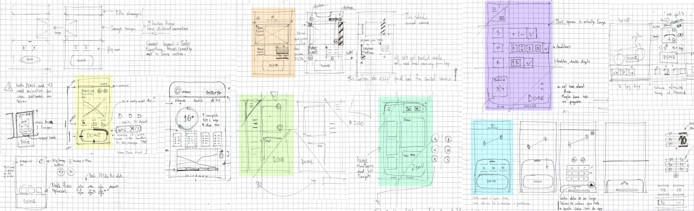
Research and general considerations
As a gym companion app, there's a significant number of challenges to be considered — mostly the environment and conditions it'll be used in: a gym, potentially crowded, loud music, and account for actual physical fatigue which can impact dexterity and accuracy in trying to hit a touch target on a small device, with a slick surface.
These considerations guided, constrained, and informed all design decisions from the beginning. From the amount of elements we can sensibly serve in one view, and the size of each tappable area. The stand out UI element, the DONE button was a direct result of touch accuracy study we conducted very early on, where users had to do 3 sets of bicep curls (with adequate load for each case) and then tap a confirmation button on the lower half of the screen. Combining the data for all inputs we came up with the current size and positioning of the DONE button, as well as the touch target area which overshoots the actual button.
touch target
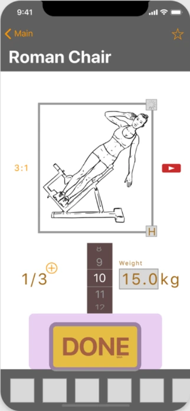
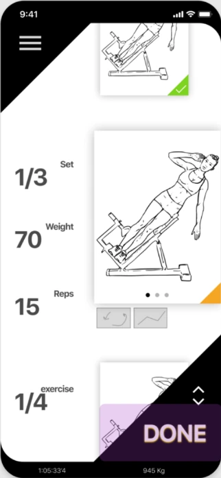
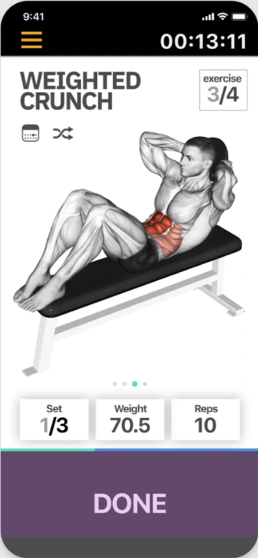
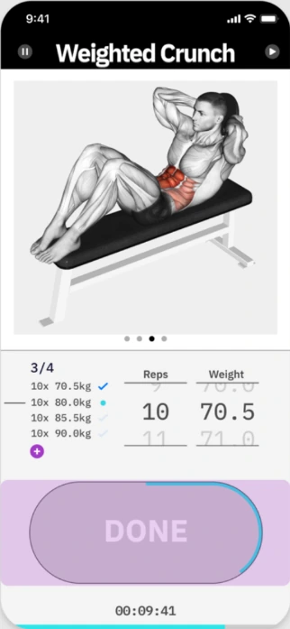
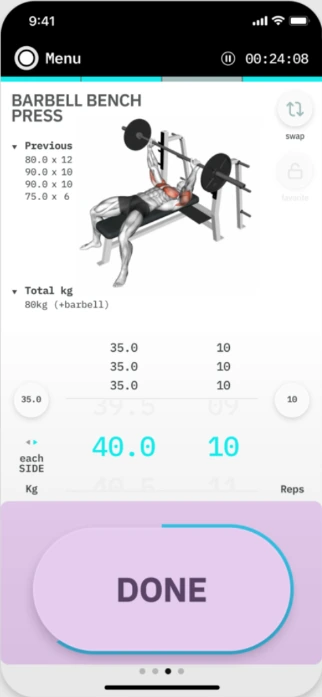
264 x 110208 x 98375 x 126375 x 136375 x 190
Incremental iteration
Another area of constant tweaking was the height of our Load and Rep pickers, as well as the distance between them. With data from a similar study where we register touch inputs and map those to actual touch targets, we were able to understand what was the sweet spot distance between these two elements, as well as the optimal height. This creates a constant tension between the elements that take extra screen real estate and the elements that lose it which requires careful consideration before implementing and sometimes further testing, specially when trying to cater to as many iPhone screen sizes as possible (supported by the latest versions of iOS).
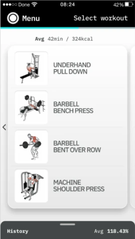
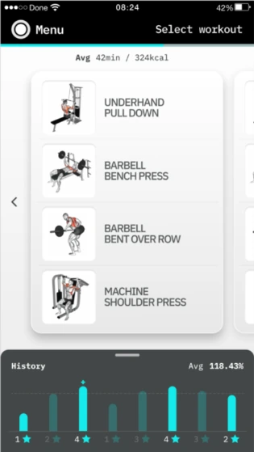
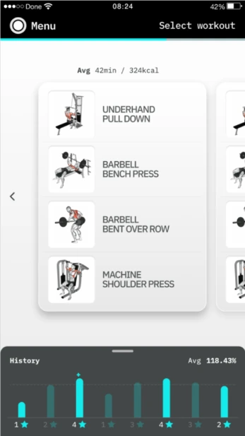
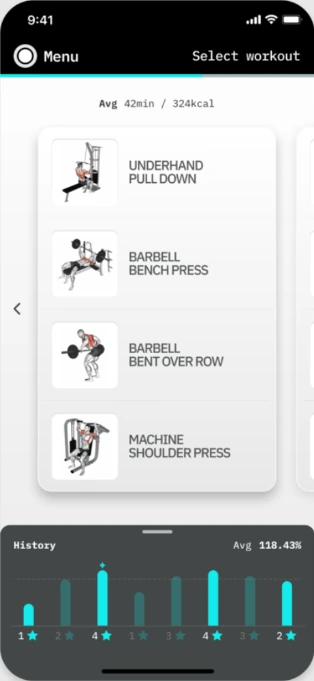
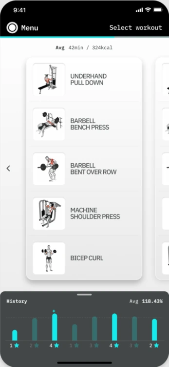
iPhone SEiPhone 8iPhone 8 PlusiPhone XiPhone X Max
User sessions
The unique constraints in designing for such use cases and environment required unique testing and validating as well, including actual gym sessions with our beta testers and lead users. Interestingly, because I was working out alongside them, the quality and quantity of the feedback was above and beyond my expectations. Users were much more keen to share a pain point or feature suggestion as they saw me sometimes struggle with the same issues whilst doing an exercise next to them. I'm still not sure how I can replicate this for every user session for other projects, but it's something that I keep in the back of my mind since.
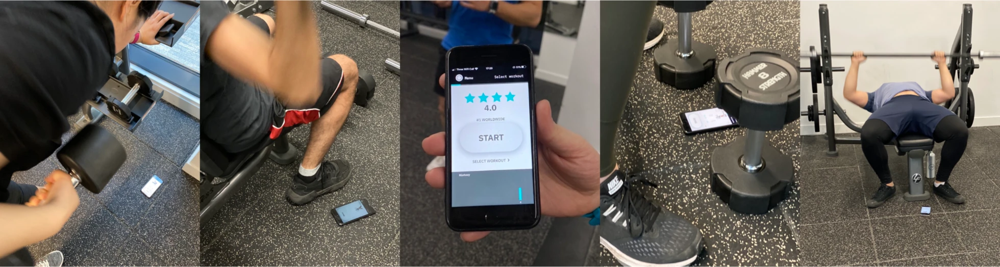
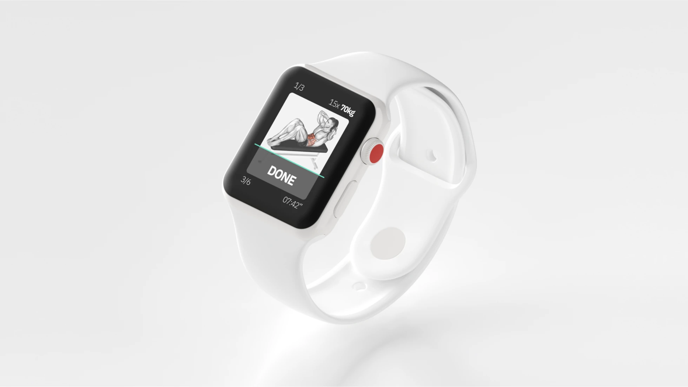
Just a side project
In the beginning of the year we launched Done Workouts on the App Store as a fully native app. Many features had to be cut in order to focus on key functionality as we all contribute to this project as and where possible. The challenges of working with a fully remote team, working exclusively in their spare time (myself included) has definitely forced us to adopt best practices in all facets of the development and design process, as well as explore the available tools as best we can do maximise what we can do and get from them.